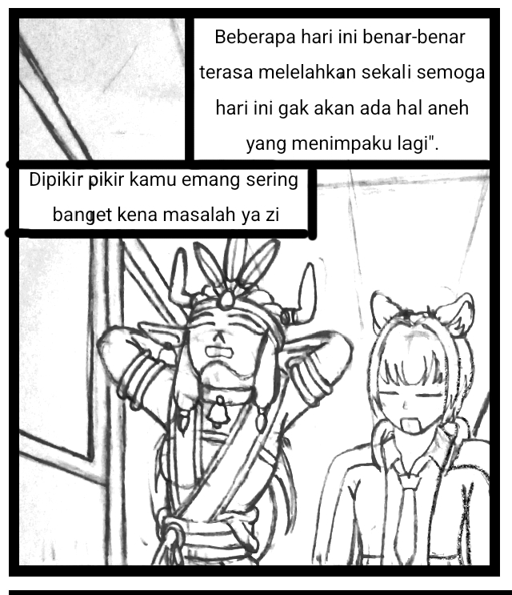
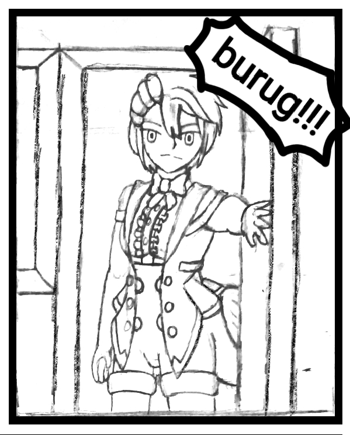
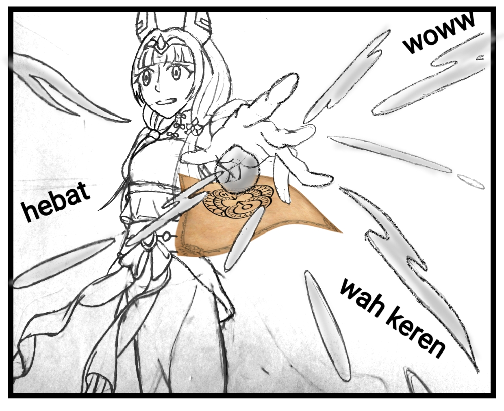

7 Kilauan Pelangi
Petualangan Zia Putri di Pandawa Akademi dimulai di sini. Bersiaplah untuk 7 kristal, 7 kesatria, dan 7 rahasia yang mengubah segalanya.
Chapter 5: Kelas Alkimia & Gadis Bernama Surya
*Untuk suara Bahasa Indonesia terbaik, buka di Chrome Android Atau Cari Suara Indonesia
Hari ini jadwal kelas alkimia. Aku berjalan bersama Nirmala ke kelas.

Aku menghela nafas. "Beberapa hari ini benar-benar terasa melelahkan sekali. Semoga hari ini gak akan ada hal aneh yang menimpaku lagi."
Nirmala menyeringai. "Dipikir-pikir kamu emang sering banget kena masalah ya, Zi."
Saat sampai di kelas, aku dan Nirmala duduk di bangku kosong paling depan. Lalu tak lama berselang, guru alkimia masuk ke dalam kelas. Suasana kelas yang tadinya berisik banget berubah menjadi hening tanpa suara.
Guru itu meletakkan bukunya, lalu mulai memperkenalkan dirinya. "Sebelum memulai pembelajaran, alangkah baiknya kita berkenalan terlebih dahulu. Perkenalkan, nama saya Ibu Padma Widyadari. Saya lulusan S3 Ilmu Alkimia dari Universitas House of Wisdom. Dan saya di sini akan mengajari kalian tentang dasar-dasar alkimia."
"Lalu dilanjut oleh murid di paling depan yang duduk di sana. Siapa namamu, gadis muda?"
"Perkenalkan semua, namaku Nirmala Muniawati," ucap Nirmala dengan lantang.
"Baiklah, dilanjut yang sebelahnya."
"Perkenalkan, nama saya Zia Putri."
"Oke, lanjut." Ibu Padma mengabsen satu per satu murid di dalam kelas.
Setelah semua murid memperkenalkan diri, Bu Padma Widyadari mulai menjelaskan materi pembelajaran.
"Baik semua, perhatikan Ibu, oke? Ibu akan mulai menjelaskan tentang apa itu alkimia."

Suara pintu dibuka dengan keras. Lalu ada seorang gadis berbadan tegap masuk dengan pede tanpa rasa bersalah ke dalam kelas. Tanpa sepatah kata, dia langsung berjalan ke kursi kosong di belakang.
Aku menatap sinis dirinya. "Dih. Dia pikir dia keren apa? Udah mah datang terlambat, main nyelonong gitu aja tanpa minta maaf ke guru lagi."
"Baiklah, sepertinya ada murid yang datang terlambat pada hari pertamanya. Tapi gak papa, Ibu maklumi untuk hari ini, oke?"
"Terserah," ucapnya acuh.
"Ehem... Baiklah kalau begitu, boleh Ibu meminta kamu untuk memperkenalkan dirimu?"
Dia menghela nafas. "Namaku Surya Kencana."
"Dasar, gak sopan banget tu orang," ucap Nirmala.
"Baiklah semua, tolong Ibu minta perhatiannya, oke?"
"Seperti yang Ibu bilang tadi, hari ini kita akan mengenal dulu apa itu alkimia sebelum masuk ke materi, oke?"
"Alkimia itu adalah ilmu turunan dari ilmu kimia yang digabung dengan ilmu sihir. Tapi berbeda dengan sihir biasa, alkimia tidak menggunakan mana untuk merapal sihir. Tapi menggunakan energi alam sekitar sebagai pengganti mana."
"Cara penggunaannya juga berbeda. Untuk merapal sihir alkimia dibutuhkan sebuah media untuk menggambar sebuah mantranya. Contohnya, media yang paling umum digunakan pada zaman sekarang adalah kertas."
"Baiklah, sebelum dilanjutkan, Ibu mau memastikan apakah ada yang bingung dengan penjelasan yang Ibu sampaikan? Atau mungkin ada yang ingin bertanya?"
Semua orang terdiam, lalu Nirmala nyeletuk, "Udah ngerti, Bu. Lanjut aja!"
"Dia emang blak-blakan banget orangnya," ucapku dalam hati.
"Baiklah, kalau semua sudah mengerti tentang apa itu alkimia, Ibu akan langsung saja mendemonstrasikan contoh sederhana alkimia."
Bu Padma Widyadari mulai melukis sebuah mantra dalam selembar kertas. Gerakannya cepat dan presisi. Sekali lihat saja aku sudah yakin Ibu sudah sangat mahir menggunakan ilmu alkimia.
"Baiklah, sigil mantranya sudah siap. Sekarang tinggal merasakan energi yang ada di sekitar kalian. Lalu dengan kesadaran kalian, fokuskan semua energinya ke satu titik. Dan... tada!"

"Sebuah bola air tiba-tiba muncul di atas tangan Bu Padma."
Semua murid terpukau melihatnya. Lalu aku bertanya pada Bu Padma, "Bu, apakah sigilnya bisa dipakai berulang kali?"
"Sayang sekali, Zia, akan tetapi kebanyakan sigil alkimia hanya bisa digunakan sekali saja."
"Wah, ribet dong kalo gitu mah."
"Ya memang ribet sih, tapi ini sangat berguna di beberapa kondisi yang sangat genting," ucap Bu Padma.
Lalu kelas pun berlanjut sampai bel istirahat berbunyi.
Surya Kencana... nama yang sama disebut Naratama di Prolog pas Zia turun dari Runa. Dia kesatria kristal juga? Dan alkimia pake energi alam = sama kayak mantra es Zia dari buku sihir! CHAPTER 6 GASS 👇
Traktir Kopi Biar Semangat ☕